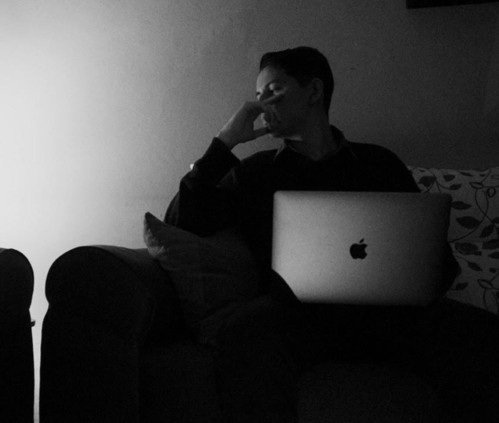

Acerca de mi
Hola! mi nombre es James y te voy a contar acerca de mi y del porqué de la decisión de empezar en el mundo del diseño y desarrollo web, también de cómo ha sido este proceso. Bueno, desde pequeño he sido muy curioso, amante del diseño y la tecnología, me parecía algo grandioso ese mundo y siempre tuve curiosidad de cómo desarrollar un proyecto en este ámbito, las expectativas siempre fueron muy altas más sin embargo no podía encontrar algo en lo que me sintiera cómodo, alguna carrera que pudiera hacer match conmigo. Después de una larga búsqueda se presentó la oportunidad de estudiar el diseño y desarrollo web, desde el comienzo fue una exploración y todo un reto, pero abrió mucho mi mente y generó una gran opinión y conocimiento sobre muchos temas.
Nunca se termina de aprender y es algo en lo que me benefició mucho ya que me gusta adquirir nuevos conocimientos y me caracterizo por siempre estar en búsqueda de algo en que hacer, algo en lo que puedo ser productivo y mostrar lo mejor de mi, sin duda este reto ha sido muy enriquecedor y espero seguir desarrollando proyectos y dar lo mejor de mi.
James Solis
Si querés contactarme podés llamar al teléfono: 2276-4942